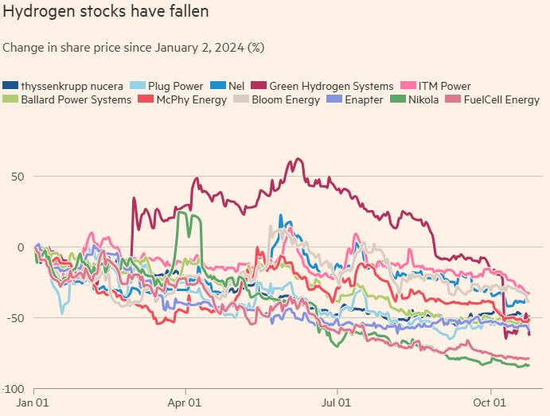

我高一那年，有一位清華的教授到台中來演講，講題是核融合（Nuclear Fusion，大陸叫核融合）。當時Princeton university正在籌建西方的第一座大型Tokamak核融合反應器TFTR（Tokamak Fusion Test Reactor）。 Tokamak原本是蘇聯的設計，也就是在一個環面形的容器內，靠高強度磁場來限制極高溫的電漿（Plasma，大陸稱為等離子體）；電漿內的氫同位素原子核在溫度夠高時，便能跨越電磁排斥力而融合成氦，並釋放出大量的能量。那位教授不但把物理和工程的綜合過程描述得極為生動引人，而且一再強調在30年內核融合電厰就必然會商業化，從而一舉解決人類的能源需求問題。十五歲的小夥子很容易上當，尤其是當演講者自己也相信那些鬼話的時候，所以我基於錯誤的訊息做了兩個重大的人生決定：第一個是捨數學而做物理；第二個是捨台大而上清華。
當然，30年早已過去了，TFTR從1982年起到1997年運行了15年，根本就沒有解決核融合電厰的真正技術難題，這個燙手山芋被丟給了下一代的International Tokamak Experimental Reactor（ITER，將於今年開始組裝，預計2027年開始運作）。與30多年前相比，現在最樂觀的核融合研究估計（只算誠實的）是還要至少50年才有可能實用化，也就是進度倒退了20年。以此趨勢來算，到50年後的2065年，進度會再倒退30年，所以屆時搞核融合的主管應該會給出「再過80年」的估計了。這雖然是個笑話，卻是很有可能會真正發生的，因為前面提到的「核融合電厰的真正技術難題」是怎様處理核融合產生的中子：人類至今所有的機械靠的都是電磁作用，而中子卻是真正全電中性的，不像原子一様有帶負電的電子包圍帶正電的核子，所以我們對中子的路徑完全無法控制，唯一的選擇是要不要遮擋它。目前所有的Tokamak設計靠的都是D+T=>He+n的反應，其中D是Deuterium（氘，多含一個中子的重氫），T是Tritium（氚，多含兩個中子的超重氫），He是Helium（氦），而n是Neutron（中子）；因為這是唯一一個其所需溫度沒有超過人造磁場控制能力的反應。但中子比氦輕四倍，所以它帶出的動能也就多四倍，亦即核融合反應產生的80%能量是由中子帶走。既然我們要發電，就必須在Tokamak外面吸收這些中子，那麼Tokamak的內壁就必須對中子“透明”，所以負責維持真空的內壁再加上吸熱的水管（產生磁場的線圈可以做在水管之外，但是仍將承受部分中子輻射）將在完全沒有屏障的情形下，長期承受比核裂變反應器高出好幾個數量級的中子轟擊，其結果是這些物質必然會弱化而需要定期替換，但是在這個過程中它們也會得到放射性。也就是核裂變電厰只須要換燃料棒，而核融合電厰卻須要定期把整個帶有放射性的反應器拆掉重裝；即使在技術上有可能做到，它的價格和風険都將遠超人類所能承受的極限。所謂的ITER和現有的下一代設計都對這個問題束手無策，搞核融合的人的態度基本上是船到橋頭自然直；可是這艘船在30年前就已經撞橋沉沒，30年來拼命加大引擎，那麼不但再度撞橋是必然的，其後果也只能更為慘烈。
法國和日本競標ITER之後，法國出價最高而獲勝，日本則得到一系列的安慰獎。地點選在法國東南部的鄉下，但距離度假盛地French Riviera只有一步之遙。
既然核融合是未來的技術，而且永遠都會是未來技術，那麼要解決能源問題，就必須開發更先進的核分裂技術。我從十多年前就對高溫氣冷堆情有獨鉺，所以後來很高興看到中共在這個專案上持續投資，到2012年已經正式在山東石島灣核電廠開建世界第一座商業化的高溫氣冷反應器。不過今天我將專注在永遠的未來技術上，所以以後有空再詳談這事。現在我只想指出，幾年前南非還沒有放棄高溫氣冷堆，西方的核電專家在列舉它的優點時，經常會提到它的工作溫度在攝氏1000度左右，剛好是對水進行電離分解效率最高的溫度，所以在高溫氣冷堆發電廠有熱有電，最適合建造氫氣厰，而用氫氣來取代汽油、柴油、天然氣和煤等等化石燃料的「氫氣經濟」（「Hydrogen Economy」）則是某些人心中解決能源供應、大氣污染和全球暖化的一舉多得方案。氫氣燃燒後只產生水，因此是完全零污染的。另外氫氣不像化石燃料一様需要效率一般在40%左右的熱機（Heat Engine），而可以透過燃料電池以極高的效率轉化為電能。全球第一個根據這個構想而開始生產的商業化產品是Toyota的Mirai氫氣動力車，2014年十一月在洛杉磯車展正式公開，同年十二月15日在日本開始銷售，預計2015年只出產700輛，但Toyota認為它會是下一代的技術主力，前途不可限量，所以還特別請了日本總理安倍晉三做代言人，對其重視的程度不言可喻。
Toyota的這個商業策略賭注，有很明顯的脈絡可循：Toyota在1995年的東京車展公開了世界第一輛商業化的混合動力車輛Prius，1997年開始正式銷售，此後18年Prius不但佔有全球混合動力車輛銷售量的一半以上，對Toyota的品牌價值也有極大的貢獻，幫助它一舉超越VW和GM成為世界第一大汽車生產商。不過到現在每個稍有規模的全球性汽車公司都已經有了自己的混合動力技術，而Toyota卻很明顯的在近年來減低了對這方面的投資，以致當所有的競爭對手都已採用更先進的鋰電池，2015年的Prius基本型仍在使用鎳氫電池。從Toyota的角度來看，混合動力車輛的技術已經成熟普及，市場也趨於飽和，與其殺價血戰，不如早對手一步，另闢新戰場。這個思路和Nintendo一様：在Wii那一代，Nintendo避開繪圖馬力的競賽，靠著獨創的遙控器走偏鋒而戰勝了更強大的對手們；幾年之後，下一代的Wii U仍然是靠與眾不同的人機介面來吸引顧客。不過就如Nintendo的Wii U遠不如Wii那麼成功，Toyota的Mirai只怕也走上了歪路。
為什麼我不看好氫氣動力車呢？這主要是因為氫氣經濟不是一件新鮮事，一百年前就有一種交通工具大量使用氫氣，只不過不是用來作燃料；我說的就是飛艇（Zeppelin）。後來這個氫氣經濟戛然而止，原因當然是1937年的興登堡號大爆炸。做過化學實験的人或許記得，氫氣是一種極易燃、極易爆的氣體，汽油和天然氣和它比起來，幾乎像開水一様的穩定安全。飛艇用的氫氣完全是由專業人員操作的，飛艇也沒有出車禍的危険，結果還是無法解決安全問題。而鼓吹新氫氣經濟的人所想像的是把載著氫氣筒的汽車交到16歲的毛頭小伙子和90歲的老太太手裡，讓他們滿街跑；與此同時，氫氣管道必須從生產厰房一路埋到大街小巷的各個加油站。結果必然是車禍衝撃到燃料箱就有劇烈爆炸，道路施工錯挖管線就會連環氣爆；哪個現代社會會願意花大銭來換裝一個使人口死亡率成倍增加的危険技術呢？燃料電池是個很有前途的新科技，但是它必須使用碳基燃料，例如甲醇（Methanol）或乙醇（Ethanol）；這有幾個原因：1）它們遠比氫氣安全；2）它們可以從生物廢料（Bio-waste）直接生產，而氫氣必須靠電能產生，全循環的效率低；3）它們的輸送和儲存都遠比氫氣便宜。所以雖然使用甲醇和乙醇的燃料電池技術還不成熟，最終必然還是它們才有可能（但不一定會）勝出。氫氣經濟又貴又危険，就如核融合發電一様，也只是永遠的未來技術。
【後註一，2025/01/06】幾天前，我在博文《雷達與隱身技術之間的矛盾關係（下）》 《Hyzon Executives Sell Remaining Shares as Dissolution Vote Looms》 《US and European hydrogen stock prices collapse as prospects deflate》 《Hydrogen Hype is Dying, And Thats a Good Thing》

26 条留言
twinkleus
2015-03-01 00:00
我认为如果能进一步解决快速充电和储能进一步小型化，电动汽车是最适合大众使用。
不过开长途车还是一个问题。
twinkleus
2015-03-01 00:00
短期内，电动车还只能在城里开开。我相信大约8至10年，电动车就可以连续开超过5个小时，而且可以很方便地充电，像手机一样。那时你可以用它开长途了。
希望如此吧。电池充电速度慢是电极的问题，现有的新设计都还很不成熟，还有很大的研发空间。
winvicta
2015-03-01 00:00
有关于氢的储存与运输,作者只着眼于 physical storage, 但是忽略了 chemical storage, 以及 nanoscale 的, 介于 physical 与 chemical 之间的 molecular storage.
那些技术极不成熟、增加费用和重量，而且对输送完全无解。
twinkleus
2015-04-09 00:00
东方超环（EAST）超导托卡马克2012年物理实验顺利结束。在长达四个多月的实验期间，科学家们利用低杂波和离子回旋射频波，实现多种模式的高约束等离子体、长脉冲高约束放电，自主创新能力得到较大提高、获得多项重大成果，创造了两项托卡马克运行的世界记录：获得超过400秒的两千万度高参数偏滤器等离子体；获得稳定重复超过30秒的高约束等离子体放电。这分别是国际上最长时间的高温偏滤器等离子体放电、最长时间的高约束等离子体放电，标志着我国在稳态高约束等离子体研究方面走在国际前列。
高参数、高约束模式偏滤器等离子体是未来聚变托克马克放电的最基本的运行方式。我国参加的最大国际科学合作项目——国际热核聚变实验堆（ITER）首要目标是实现400秒的高约束等离子体，但实现该科学目标尚面临众多科学和技术（物理和工程）上的挑战。目前，国际上大部分托卡马克的偏滤器等离子体持续时间均在20秒以下，欧盟和日本科学家曾获得最长为60秒的高参数偏滤器等离子体。本次实验，我国科学家针对未来ITER 400秒高参数运行的一些关键科学技术问题，如等离子体精确控制、全超导磁体安全运行、有效加热与驱动、等离子体与壁材料相互作用等，开展了全面的实验研究，通过集成创新，实现了411秒、中心等离子体密度约2´1019m-3、中心电子温度大于两千万度的高温等离子体。
高约束等离子体放电是未来磁约束聚变堆首选的一种先进高效运行方式。从上世纪八十年代以来，世界上众多托卡马克都在探寻各种方式实现高约束放电、并不断尝试延长高约束放电时间。实现长时间高约束放电长期以来一直是国际聚变界追求的目标和挑战极大的前沿课题。目前正在运行的托克马克的高约束放电时间大都在10秒以下，最长的是日本JT-60U装置（已退役）曾在2003年利用强流中性束加热实现一次28秒的高约束等离子体放电。在本轮EAST实验中，我国科学家另辟新法，利用低杂波与射频波协同效应，在低再循环条件下实现了稳定重复的超过32秒的高约束等离子体放电。我国科学家所用的方法独特、经济、有效，为未来国际热核聚变实验堆（ITER）提供了一条高效实现高约束放电的新途径。
东方超环（EAST）是由国家发改委立项的“九五”国家大科学工程，是由我国科学家独立设计建造的世界首个全超导托克马克，于2007年建成并开始科学实验。在国家科技部（ITER专项）、国家基金委、中科院等部门的支持下，东方超环的科学工作者在吸收国外先进科学知识和技术的基础上，不断创新，重大科学实验设备国产化率大于90%，科学实验不断深入，已吸引大批国外科学家来华开展科学实验，并且美国能源部已将EAST列为未来美国磁约束聚变合作的首选装置。自今年2月开始本轮EAST科学实验以来，超过100位的国外科学家来华开展广泛的合作研究。实验中，国内外科学家们围绕高参数长脉冲等离子体相关科学技术问题开展了大量的科学实验，取得了一系列新结果和大量的科学实验数据，为未来更高参数的长脉冲物理实验奠定了很好的科学技术基础。
400秒等离子体运行
稳定重复的长脉冲H-mode运行
www.ipp.cas.cn/.../t20120710_96336.html 这是大陆在2012年做出的一个重要结果，而且EAST所取得的数据是在没有“中性束加热”和“电子回旋加热”的基础上做出的，意思就是这个超出目前国际最好水平20倍的数据，完全是通过微波可控加热完成的！就是说在EAST的辅助加热装置完成后，这个数据还可能大幅度提高。
版主是高能物理的专家，想听一听版主的分析。
钱投下去自然有进步，但是这些技术性的指标突破和最终要发电没有关系，因为他们对真正的难关还是无解。这些新闻稿只是用来骗经费的。
twinkleus
2015-04-09 00:00
我知道版主主要认为中子是一个无法克服的障碍，会导致能量的急剧损失，或导致内壁材料的快速失效及核污染。但是，我也知道大陆不像美国和欧洲一样，在看似无望的基础学科上花大力气。进一步说，中美都是研究过氢弹和中子弹的，对中子的特性是有相当深入的研究，而且这些知识都是这些国家的最高机密之一。同时从公开的资料显示，大陆很多研究氢弹的专家都转入研究可控核聚变项目，所以我希望版主能从上面的信息当中找到一些积极地信息。
EAST是比ITER小半代的先期实验，他们这次吹嘘的“成就”还是在用磁场约束等离子体的技术细节上。
Kopitiam AtKlang
2015-06-05 00:00
1)ITER 是International Thermonuclear Experimental Reactor 的缩写。
2) 参考这篇
http://goo.gl/OLMsZS (聚变能源或成一场空梦：终极能源实验遭遇坎坷)。
在20世纪70年代，托卡马克的前途似乎一片光明，有些研究者甚至预言，到20世纪90年代就能建造出聚变核电站来。当时唯一的挑战就是，如何把研究型反应堆放大到实用尺寸，一般而言，托卡马克结构越大，其中的等离子体能达到的温度就越高，核聚变的效率也就越高。
然而问题渐起。等离子体内部能传导电流，受自激电流的影响，等离子体会变得弯拱扭曲，形成剧烈的乱流，这些乱流像鞭子一样抽打等离子体，将其甩出磁笼，冲击装置的外壁。于是，随着等离子体温度升高，必须要有更大的托卡马克来提供额外的空间，同时还要有更强的磁场来约束等离子体。这两者都需要增大线圈中的电流，而更大的电流意味着更高的能耗，结果很清楚：托卡马克越大越强，它就需要更多的能量来维持。
这种正反馈意味着，普通的托卡马克装置永远也无法输出净能量。对此，包括李秀景在内的研究者只知道一种招架方法：超导，即利用有些导体在很低温度下电阻消失因而没有电能损耗的特性。如果托卡马克的电磁铁使用超导材料，只需注入一次电流，它就会一劳永逸地运转下去。这样能耗虽然降低了，但花费却非常巨大，超导体是一种特殊、昂贵的材料，而且为了维持超导状态，必须用液氦一直冷却它们，使之处于非常接近绝对零度的状态。
3）核终的讨论串提到
核融合真正的问题，也不是在中子的控制问题，把核融合包封性的问题导向中子无法控制是一种误导或是不具论证性的推断，目前电磁核融合是使用离子替代中子，真正的问题在于无法有净能量的输出，一般咸信是包封时间不够久，而破坏电磁包封的主因，来自于不纯物混入电浆，与中子不受控，没有关系。
https://goo.gl/qEltyC 你不是学物理的，请不要拿一知半解的认知来哄人。我的时间有限，不能一个一个人地教。文章已经写了，补充材料得你自己去找。如果你的基础教育不够，不能理解，那就不该在这里下断言。美国人写文的步调和中国式的不一样，翻成中文很容易被误解。你只凭着一篇翻译过来的科普文，就要来否定有专业教育的人的意见，未免太自不量力。
核聚变示范电站
一般人往往不知道，核聚變比裂變還要早發現，根本不是什麽“下一代”的突破；剛好相反，裂變才是當年取代聚變、解決困難的神奇新科技。聚變之所以被無知群衆拿來當未來技術，恰恰是因爲它先天的基本缺陷無可跨越，導致90年下來還不如裂變發現後頭5年的進展。那些科幻敘事，把裂變到聚變說成“進步”，等同於說人類終究必須進化成猴子，或者汽車必須換成老鼠拉車，所以要求幾十年和幾千億美金來對人和鼠做基因改造；對外行人或許可以裝扮成高科技，但實際上是純粹的虛功，偏偏他們有辦法把這樣的計劃寫進十四五。
過去半個多世紀來，聚變研究人員的慣例是說還要“30年”（說“50年”的也有，是廉恥心沒有100%被狗吃光的人，但不是多數）。不過最近5年，恰恰在NIF這類“大科學”計劃Crash & Burn的背景下，誇口越來越離譜，對新的金主開始改口為10年或甚至5年，其基本原因是氣候變化的證據越來越明確，所以減碳政策越來越緊急，眼看其他真正有用的科技（太陽能和風電已經實用化，由裂變輔助的儲能電池是最後一步）即將完全成熟，10年後這套騙術將徹底失去市場，所以只好拼命撈最後一把了。
2021-09-29 00:58 回复
最近看到一篇张博庭（中国水力发电工程学会副秘书长）的采访记录, 谈抽水储能:https://wallstreetcn.com/articles/3638611.张的说法是 (1) 电池不安全, 不适合稳定性要求较高的电网 (2) 氢储能实际上是安全的 (此处应专指用于发电端储能) 但是不经济 (3) 水电的调峰能力其实比火电更强 (4) 抽水蓄能采用非常成熟的水电技术, 经济性佳.
他說的基本沒錯，只是省略了一些新發展和細節；整體來説，不算離譜。
（1）目前批量投產的儲能電池，95%以上是普通鋰電池，這的確有安全性問題，但是行業已經開始向磷酸鐵鋰和液流電池轉換，實際上沒有人認爲十年後還會繼續用傳統鋰電池。（2）氫能的危險性在於零售應用，用在電網儲能時的問題是經濟性，這一點沒有錯，不過我始終也是這麽解釋的啊。（3）水電如果存在，當然是最理想的，問題在於一方面它很有限，另一方面水資源是一個比電力更爲短缺的東西，發電/儲能往往不能是水庫的最優先任務。（4）同上，如果建成了，抽水蓄能的運作效率高、成本低，這也是實話，但前提是必須忽略修建的花費和選址的困難。
我以前已經解釋過，抽水儲能如果是在河川截流的水庫發電站做雙向運行，經濟性還可以説得過去，如果是另外專門挖蓄水池，那就是庸人自擾；以下針對後面這一點做詳細論證：
抽水儲能站必須滿足幾個條件：在一個豐富可靠的水源（中型以上的湖泊或河流）邊邊，剛好有一個懸崖，懸崖上有一個丘陵平臺，既平坦又寬廣，足夠建造人工湖，湖水冬天也不能結冰，而且這個山丘地質必須很穩定，能夠承受山頂新增的重量而沒有土崩危險。這裏我簡單估算一下：假設儲能容量為100GWh，這相當於3.6*10^14J，再假設高度落差為200公尺，這對應著大約0.2個Gigatonne的水容量，相當於600座帝國大廈，對地基的要求非同小可。此外，假設人工湖平均深度為4米，則這個人工湖直徑大約為8公里，山頂平臺上若是有如此寬廣的平地，早就住滿人了。
這裏的基本問題在於重力位能的密度遠低於化學能，實際上選址只能找到直徑250米級別的地點，那麽容量只有前面計算的千分之一，亦即100MWh，用電池的話，相當於1200台Tesla 3的電池組，堆不滿一個小倉庫，建造價格更是差了兩三個數量級（這還沒有考慮地價和電力傳輸系統），所以相比之下，抽水儲能完全沒有競爭力，根本不可能普及。
有讀者反應，張談的應該是在同一個峽口建上下兩個水庫，既發電也可以儲能。但是他給的鏈接會導致UDN的留言欄發生格式錯誤，所以我必須刪掉，只好在這裏回復：
是的，上面我早先的回復版本可能有誤解/會引發誤解，我已經做出合適的增刪修訂。至於爲什麽我原本直接談人造池塘的儲水方案，這有幾個原因：（1）博客以前已經解釋過，水庫發電站逆向儲能的方案，在經濟性上一般是可行的，問題只在於適合建的河流不多，以及水資源的運用有超越發電或儲能的考慮；（2）水庫雙向發電儲能是很老的技術，不應該還有什麽爭議；（3）現在美國的Start-up，談抽水儲能時，指的就是新建人工池，這樣選址比較有彈性，至於浪費錢，那原本就是他們的用意。
爲了徹底澄清我的看法，在此再加一個總結：建雙重水庫的儲能站，原則上絕對是值得考慮的，執行上必須依個案的特點，做性價比的分析，但是在大局規劃上，水電儲能先天就嚴重受限於合適地點的Availability，不可能成爲低碳能源體系的主力。
2021-10-02 04:09 回复
我算的理想状况是四十多平方公里，直径七八公里，差了一个数量级。是不是有转化率问题？我查了水电转化率有80%左右。
謝謝更正。這來自我從小的壞習慣，懶得用筆算，即使在博士班，同學寫滿兩三頁的演算過程，我都先試圖用心算；年輕這樣做還有時可行，現在記性比以前差太多了，老是掉項，只好改成筆不離手。但是這個算式太簡單，我老毛病犯了，又想偷懶，原本考慮了重力加速度，結果算著算著就忘了。
所以年輕人千萬不要辜負光陰，現代世界裏有趣的知識太多了，適合學習的東西，就應該趕緊用心去學。等到了我這個年紀，基本就沒辦法再學完整的全新課題，頂多只能得其綱要輪廓。例如上個月我心血來潮，想深研Galois Group，結果20幾歲時可以幾天解決的題材，進度一拖再拖，學了東忘了西，只好淺嘗即止。
2021-10-01 05:32 回复
我做了光伏储能的粗糙估算: 假设一平方米的光伏组件发电约 100w, 一天最多8小时总共发电0.8kwh, 假设在光伏组件底下同时建设高约一米, 占地0.5平方米的储能设备, 体积 0.5m^3, 存储一天发出的所有电需要体积能量密度 0.8 wh/L 或 0.00288 MJ/L, 用来存一季度电量为 67 wh/L. 磷酸铁锂足够存一个季度的电了, 哪怕能量密度低的液流电池, 也够一个星期了, 可见技术上并没有障碍.
一般人只關注發電容量（Generating Capacity），其實越環保間歇性就越强，應該看的是實際年發電量；換句話說，不能拿不同類的電力來源以MW和MW相比，至少得用MWh。一個簡單的Rule of thumb是：核能持續發電能力為100%，水電、風電2/5，光伏只有1/5。然後這樣的間歇性要求儲能上的配對投資，耗費一下子加倍，這還沒有考慮長程輸電所需的資金。
不過正如你的分析，光伏/風電+儲能的大規模全面應用，不但沒有任何基本的技術難題，連價格都已經接近可以和煤電直接競爭的門檻，只要繼續批量投產，經濟性完全達標指日可待。國家的責任，在於推動儲能和輸電的建設發展；這樣明確的邏輯結論，我在過去六年反復解釋傳播，結果歐美政府沒有理性倒也罷了，中國也被忽悠到核聚變和氫能源的歪路上，直接導致儲能和輸電建設落後需求，這是現在缺電限電的直接原因之一，經濟損失以百億計。然而若說肉食者鄙，就抓錯重點了，畢竟這是一個專業性高的議題；真正的問題在於學術界沒有人敢出來爲國説實話，縱容騙子滿足小圈子利益，明顯錯誤的認知被接受為“常識”。唉，楊先生這樣的國士終究還是單獨的異類。
2021-10-20 05:47 回复
0.8^7 ~= 1/5, 那么光伏+储能大概7年后能彻底平价化. 此外, 对于电动汽车, 不少报道认为大概五年后, 成本就能和燃油车持平. 加上王先生也提过的, 电动汽车和光伏+储能两个产业间有协同效应, 电池成本降低未来很大概率能实现.
電動車要從40、50%的占有率，上升到80%以上，最大的阻礙在於充電樁的普及，而且這不是產業自己能解決的。我很擔心中國政府沒有足夠的遠見，關注和投資不足，事到臨頭才試圖亡羊補牢，如同現在的缺電問題一樣，所以正在計劃專門寫一篇文章來詳細討論（當然，博客對能源問題已經提早幾年警告得極爲明白，但言者諄諄、聽者藐藐，也沒有用；這正是所謂的Cassandras curse）。
另一個附帶的觀察，是電池固然是電動車的頭號關鍵技術，但是Power MOSFET也是一個重要部件。當前的主流是SiC，五年後可能會進化為GaN，中國在這兩方面的商業應用都還沒有達到第一梯隊。要做追趕，在行業營收全面爆發之前會容易得多。這又是一個中國政府需要先見之明的角度。
至於電池的技術選擇，反而不成問題；私企達到規模之後，完全可以自行嘗試解決。鈉離子電池只是可能的路綫之一，更熱門的還有Solid-state Electrolyte（雖然我個人不看好；因爲電池最大的技術難關，向來都是電解液和電極之間的界面，把電解液改爲固態徒增其困難，感覺上是自找麻煩）等等，最終哪一個勝出取決於成本、安全性、甚至是推銷能力那些細節，政府不必操心。
2021-10-24 04:32 回复
核聚变研究动态
很高興看到有等離子體物理出身的人願意説實話。最近英美媒體對核聚變的吹捧又上升了一個級別，本周MIT系的Commonwealth Fusion創下新記錄，騙到18億美元；然而來自美聯儲大水汎濫的容易錢，才是核聚變成爲熱門“未來科技”的真實原因。
除了p+B之外，我以前也討論過另一個Alternative，亦即用氦3，不過它的特性和缺點基本一樣：和D+T相比，所需的溫度高不止一個數量級，中子數只減少一個半數量級，而且氦3和氚一樣稀缺昂貴，所以更加不值深究。
2021-12-05 07:49 回复
一则让人哭笑不得的新闻。https://oilprice.com/Energy/Energy-General/Europes-Nuclear-Fusion-Race-Is-Going-Private.html。欧洲有一些私人财团进军核聚变，这倒是富人用钱向世界证明一则不可能的事情，至少不算事最坏的花钱。中国也应该学习，搞几个企业去美国上市，用美国人超发的股票也好过用国家经费。
這些新創的核聚變公司已經來晚了：今年美聯儲加息之後，股市的狂歡結束，他們大部分會無疾而終，只有我提過那幾個在去年底就大撈一票的，還有可能再熬上幾年。
2022-02-10 11:28 回复
另一个应验的预测就是电动车。今年的许多新能源车热卖，某品牌的插电混动车在国内非常火爆，品质普遍被国人称赞与丰田独门秘籍的传统混动车媲美毫不逊色。借电动车打垮日本传统汽车产业的判断今年也被许多国内自媒体广泛传播，怀疑中国电动车未来的人已经不多，大家也都看出来了
是的；推崇電動車的人，以前就有，但最早明白指出這場產業革命對國際地緣政治有重大影響的，的確是這裏。事實上，特殊管道的聯絡人在看到博客那條留言評論之後，理解其重要性，特別指定要求寫入後來邀稿的正文（參見博文《2022年國際局勢的回顧與展望》）之中。
很不幸的，在大衆輿論場上，我早年的正確評論有些被忽略，以致謬誤的胡猜以訛傳訛、至今不衰。這裏我指的是世界主要工業國家之中，只有日本全力投入氫汽車路綫的決定：大陸有很多人腦補聯想為獨占專利的影響，其實2010年代早期豐田曾經是Tesla的最大股東，而且計劃很快推出自己的鋰電池汽車，因此他們在電動車方面的專利一樣領先。更早，半導體的專利也沒有阻止產業從美國轉移到日本、然後從日本轉移到韓國和台灣。這裏全世界選擇電動車而不是氫汽車的理由，和專利一點關係都沒有，純粹就是技術的優劣問題。
2022-07-22 00:17 回复
Taizi Huang
2024-12-25 12:51
先生您提到核聚变公司，国内也陆续有“星环聚能”（西安）、“聚变新能”（合肥）、“能量奇点”（上海）、聚变能源（上海）等公司成立。从金融史观，我能看到的是：1. 美元滥发带来的“未来科技”资产泡沫，行内人跳车前赶紧捞一笔（庄家）；2. 地方科研院所和地方政府的背书和政策支持，私募基金负责击鼓传花（管道）；3. 只有公关，没有媒体监督（宣传）。完美符合之前提过的“金融霸权的哲学”。
中國熱衷於複製美國的金融資本炒作模式，除了改開以來、欠缺邏輯批判能力的文人主宰文化思潮，膚淺認知普及而產生主觀心理自卑感之外，也有原本技術水準落後多代、所以依樣畫葫蘆的確曾是最高效發展模式的客觀現實，然而過去10年，這個客觀現實背景已經因爲以下幾個因素而逆轉：1）中國的工業技術普遍達到世界先進水平，無可借鏡於前人對技術路綫試錯的經驗；2）中國經濟發展的低垂果實被摘采盡净，債務纍積的惡果卻開始爆發，同時美方為維護霸權而强行貿易脫鈎並全面打壓，於是GDP成長率從10%左右腰斬，導致創業成功機會萎縮而資源成本大幅提高；3）歐美政治社會經濟文化全面衰敗，昂撒殖民帝國利用美元霸權搜刮全球，已達竭澤而漁的程度，任何國家的資本炒作詐騙果實最終大半必須落入美系金融財閥的口袋。這三項原本就遠遠足夠讓任何理性的政策制定者趕忙扭轉以往的粗放發展心態，改變金融和科技管理規則以促生謹慎嚴格的投資論證，遏止資金和人力等資源被成功機率或實用價值爲零的詐騙項目所浪費。可惜中國學術界無比糜爛，不但沒有做出改革建言，反而積極參與對國家經濟的吸血，那麽四五年後這個昂撒主導的國際金融資本體制轟然坍塌之時，中國不但無力從中獲益，而且還又要成爲美方緩衝危機的墊背犧牲品，就如同2021年那樣，若再有漢奸金融主管作祟，損失可能會更嚴重。